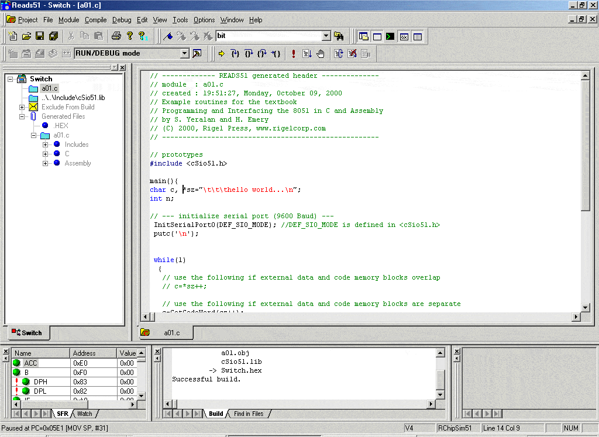

Compilateur C Reads51 gratuit par Rigel Corp.

La société Rigel Corporation (www.rigelcorp.com) met à votre disposition gratuitement un compilateur C (Reads51). Il s'agit en fait d'un IDE — environnement de développement — qui permet d'écrire, compiler et simuler des programmes en langage C pour µC de la famille 8051. Son usage est réservé à une utilisation non commerciale. Cette bonne initiative mérite d'être soulignée et devrait être généralisée à d'autres µC.
Télécharger le compilateur à l'adresse : http://www.rigelcorp.com/download.htm
Ce compilateur vous sera sans doute utile pour suivre les cours de programmation de la revue ELEKTOR (news du 05/01/02).